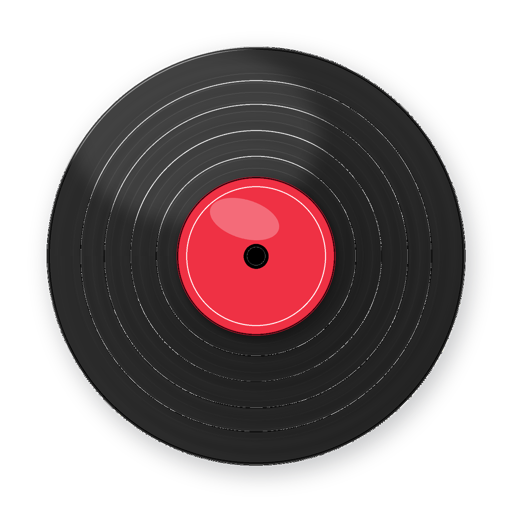
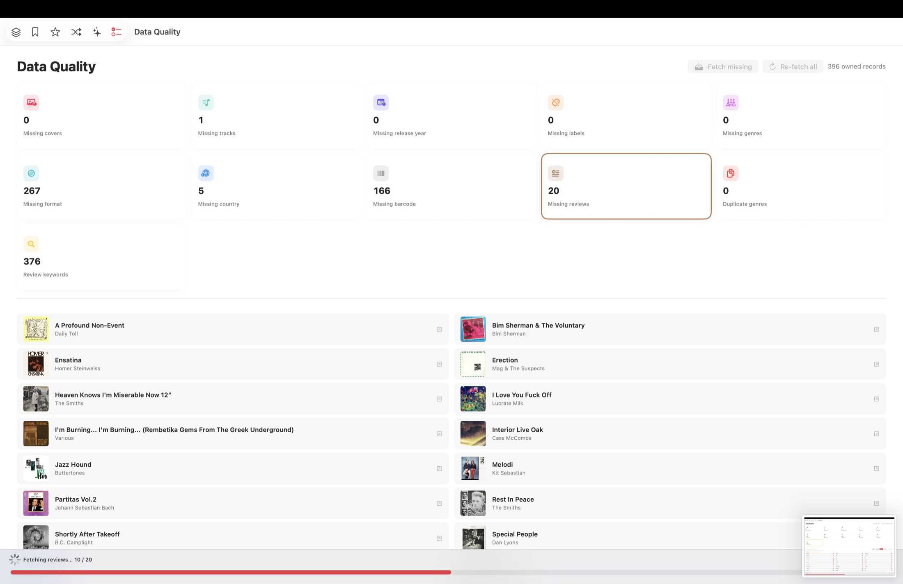
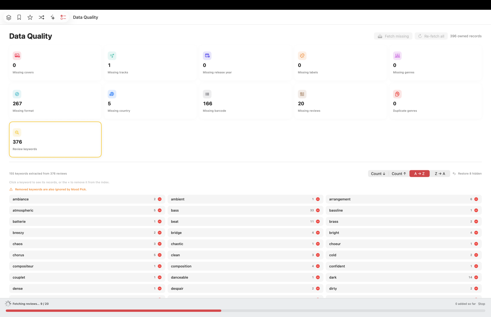
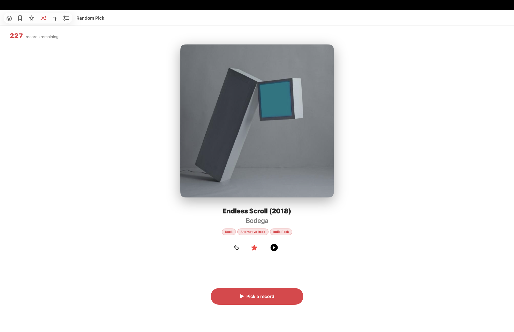
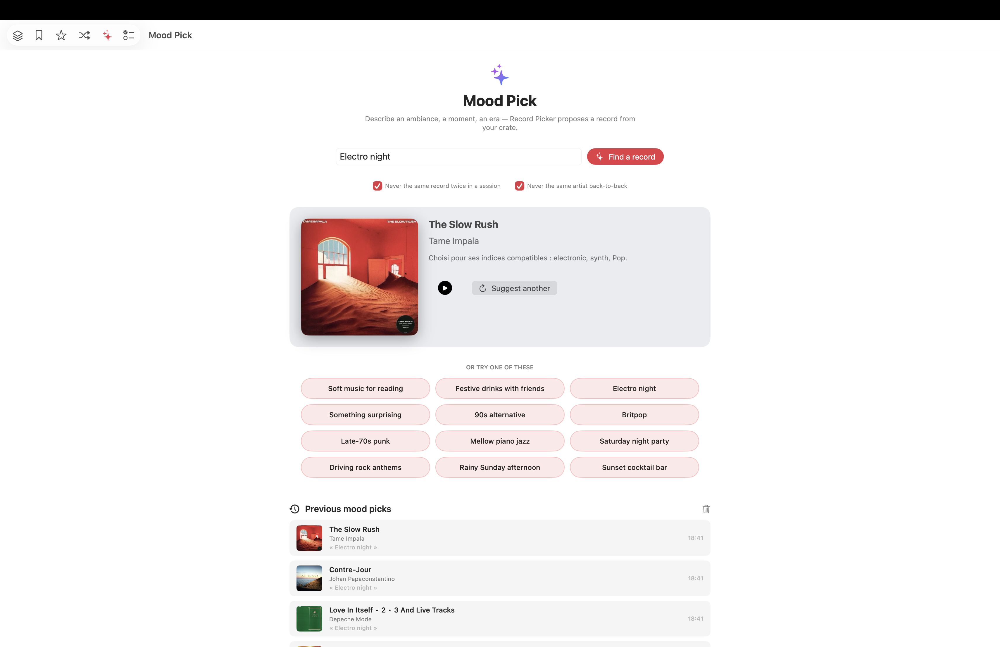

Красивый каталог
Просматривайте коллекцию как масштабируемую мозаику обложек или сортируемый список. Редактируйте любое поле на месте: название, исполнитель, жанры, теги, год, формат, лейбл, страна, заметки и собственные обложки.


Приложение для Mac · macOS 1.5
Спокойный нативный способ каталогизировать винил и решить, что поставить сегодня вечером.
Record Picker переносит вашу коллекцию пластинок на Mac: быстрый каталог, рекомендации по настроению и автоматическое обогащение критическими рецензиями в чистом нативном приложении SwiftUI.
Без рекламы, без отслеживания, без подписки. Ваша библиотека приватно синхронизируется между Mac, iPhone и iPad через iCloud.

Просматривайте коллекцию как масштабируемую мозаику обложек или сортируемый список. Редактируйте любое поле на месте: название, исполнитель, жанры, теги, год, формат, лейбл, страна, заметки и собственные обложки.
Полнотекстовый поиск включает живой навигатор результатов, подсветку совпадений и пошаговый просмотр. Восемь разделов доступны через Command-1 — Command-8.
Введите момент, например дождливое воскресенье, electro night или Britpop. Mood Pick предложит подходящий альбом с вашей полки и избежит повторов.




